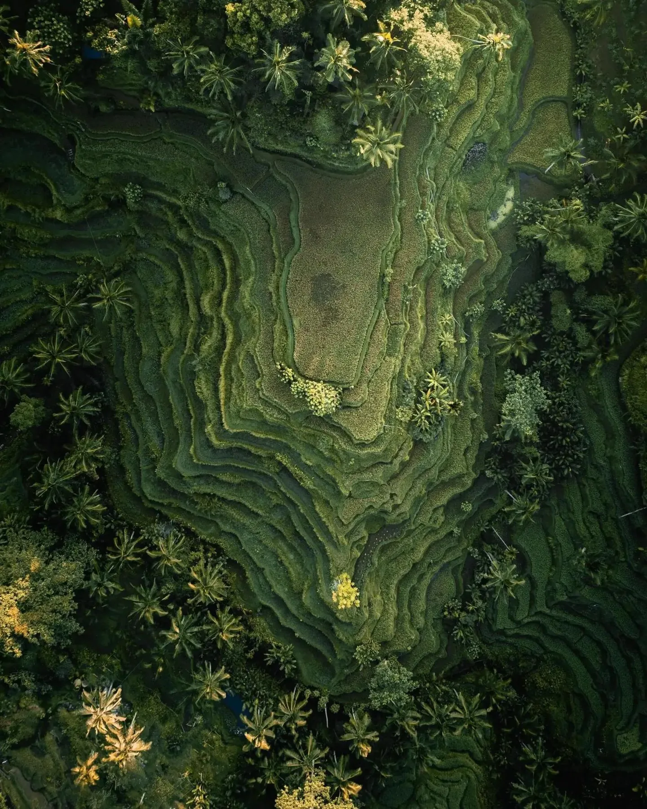
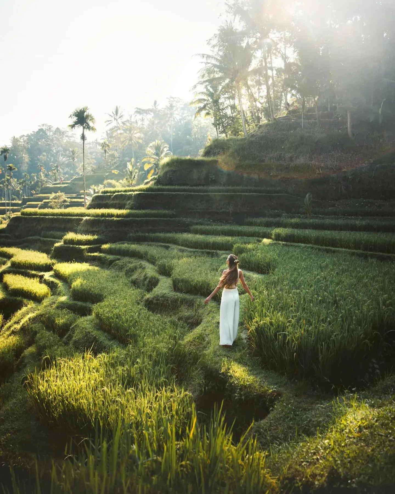
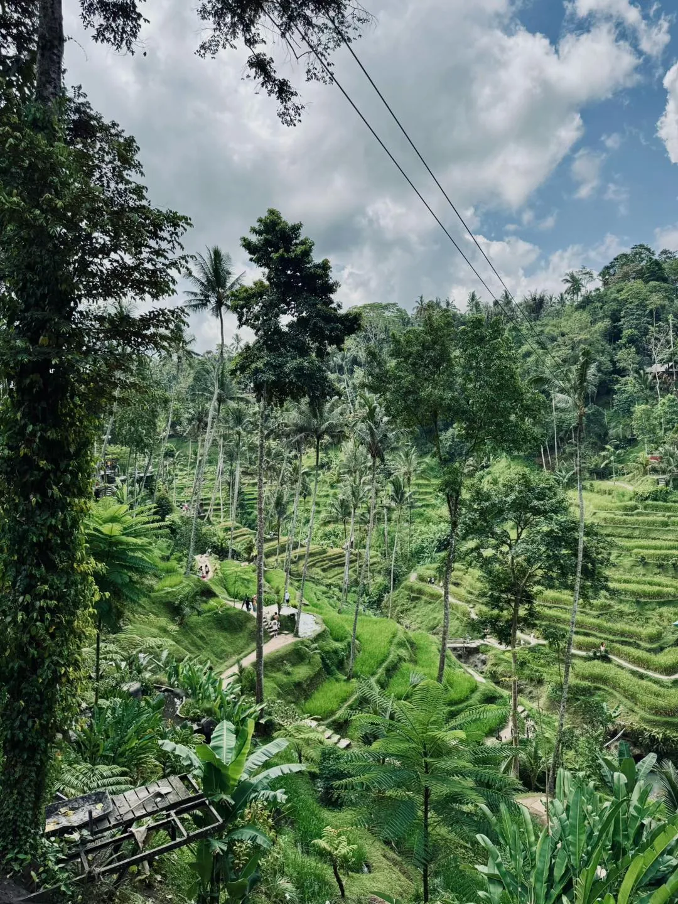
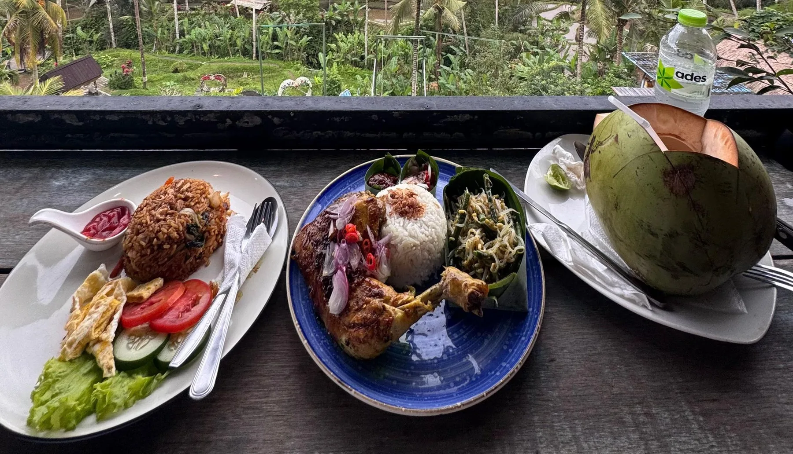
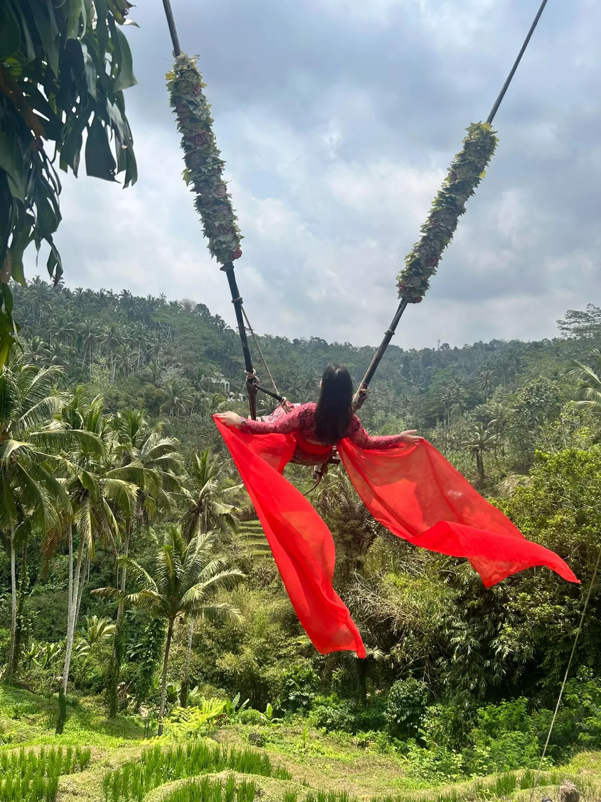
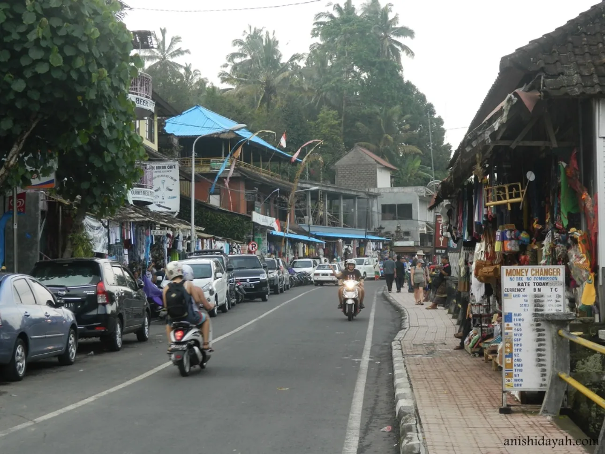
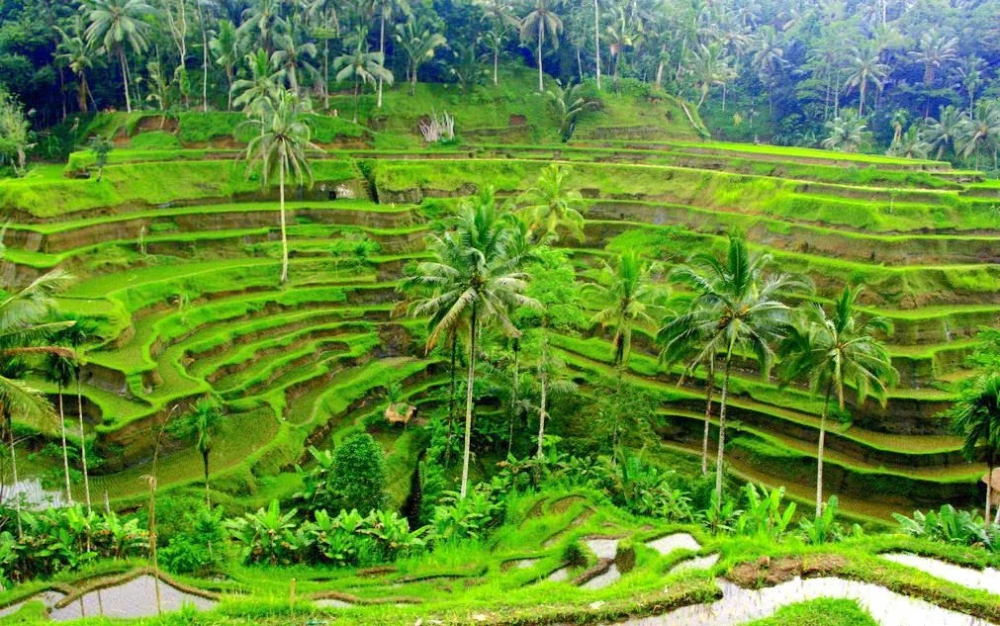

Before Your Activity
If the route and timing allow, you may visit Tegallalang before starting your trekking or other adventure. It can be a refreshing and picturesque start to your day.
✦ OPTIONAL EXPERIENCE · YOUR CHOICE
Imagine stepping into a postcard-perfect landscape of emerald-green rice paddies, gentle valley breezes, and iconic Balinese farming terraces. Add a Tegallalang Rice Terrace visit to your journey for a taste of Bali’s breathtaking rural scenery, traditional agriculture, and peaceful atmosphere.
This visit is completely optional — you decide whether you would like to stop.
Discover the Experience ↓
✦ OPTIONAL · FLEXIBLE · MEMORABLE
Make your trip between Kintamani and Ubud even more memorable with an optional visit to the famous Tegallalang Rice Terraces. Discover Bali’s stunning agricultural landscapes, explore the walking paths, enjoy the peaceful surroundings, and capture unforgettable holiday moments along the way.
Your visit is entirely optional. After your tour is booked, AWAN TREKKING will check your travel route and schedule to see whether a suitable Tegallalang stop can be arranged. The exact timing will depend on your route, available time, and travel arrangements. There is no obligation to visit, walk the terraces, or purchase anything.
Please note: Entrance tickets, local conservation fees, swing rides, guide services, and other paid activities at the terrace may incur additional costs.
If the route and timing allow, you may visit Tegallalang before starting your trekking or other adventure. It can be a refreshing and picturesque start to your day.
Prefer a relaxing break afterward? If it fits the return route and available time, you may stop at the rice terraces to take in the views and unwind.
Let AWAN TREKKING know if you would like to visit. We will check the route and available time; if you prefer not to stop, your trip can continue as planned.
A BALINESE RICE TERRACE EXPERIENCE
Set in the lush valley north of Ubud, the Tegallalang Rice Terraces offer a world-famous view of traditional Balinese cascading fields and palm-fringed hillsides. Activities vary by venue, exact location, and availability.

01 · SCENIC WALK

02 · LOCAL CULTURE

03 · LOCAL REFRESHMENTS

04 · PHOTO OPPORTUNITIES

05 · LOCAL SHOPPING

WHY ADD THIS STOP?
Tegallalang’s rice terraces offer a refreshing pause during your Bali journey, a chance to witness iconic island landscapes, and an opportunity to support local rural communities. A stop may fit after a Sunrise Jeep Tour, Mount Batur Trekking, or an ATV activity when the route and schedule allow.
PLAN YOUR VISIT
A few simple tips to help you enjoy your rice terrace stop.
CLEAR & TRANSPARENT
We want every guest to know what the stop includes and which costs are separate.
A Tegallalang Rice Terrace visit is entirely your choice. If you would like to go, AWAN TREKKING can arrange the stop without an additional arrangement fee when it fits your agreed route and schedule. Any purchases, entrance fees, parking charges, or optional activities requested at the location are paid separately by guests. Availability and costs depend on the specific spot visited along the terrace.
You are welcome to visit, walk around, and enjoy the scenery without buying anything — or skip the stop and continue your adventure.
READY TO PLAN YOUR BALI JOURNEY?
Tell us which tour you are interested in, and we will help discuss whether a Tegallalang Rice Terrace visit can fit your itinerary.
CHAT WITH US ↗Discover more adventures with Awan Trekking.